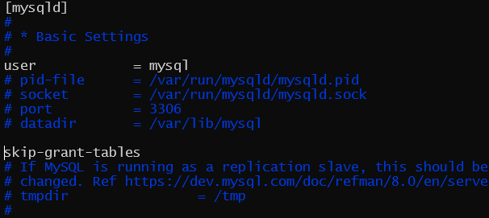

摸了两个月终于写了第三篇文章XD
这几天写了个项目用到了MySQL，最开始图方便装的windows版。方便是方便，装完了就能直接用。后来想着干脆把这玩意儿丢到wsl2里面，方便调试(主要是要把Django放wsl2里面)。然后……然后tm折腾了一晚上。
1 安装
安装很简单，Ubuntu下面sudo apt install mysql-server-8.0就行了。
然后这里就有第一个坑……用sudo apt search ^mysql-server搜索的话你就会看到其实有三个包：
 看描述可以看出来，第一个和第二个包内容是相同的，第三个包和前两个包相比少了mysql-client的部分；第二个包和第一个包最大的区别就是System database setup这句话。也就是说用
看描述可以看出来，第一个和第二个包内容是相同的，第三个包和前两个包相比少了mysql-client的部分；第二个包和第一个包最大的区别就是System database setup这句话。也就是说用sudo apt install mysql-server-8.0来装的话，会少一些配置过程。
为什么说有坑呢，你上百度搜linux安装mysql，不敢说80%，至少90%的文章(反正大家互相抄，说99%也没啥问题)都说 安装过程中需要输入密码 ，但是实际上8.0没这一步……后面出问题时搞得我一度以为哪儿出问题了。当然这只是个小坑。
2 配置&启动
前面说过，安装mysql-server-8.0不需要配置，其实是apt不讲wood，来骗，来偷袭。不仅要配置，还要配置好几个地方。
2.1 启动
先说启动，配置主要是用户密码之类的。
一般来说，启动分两大类，一类是直接运行可执行文件，比如> mysqld或者> mysqld_safe。
mysqld_safe会在服务端挂了的时候拉起来
在百度上搜相关内容的话多半是会看到这句话的，我也没试过，就当它是对的(逃
第二类就是用systemd或者service之类的工具了，还能配置开机自启，稍微方便点。
实际上，systemd在WSL2上是用不了的。
WSL2：我不要你觉得，我要我觉得
原因是：WSL2虽然是虚拟机，但是它并没有PID1的进程，PID1其实是Windows系统内核
在WSL2，如果不用mysqld_safe的话，service mysql start就是你最好的选择。
其实这里也有个坑，但是先按下不表，因为暂时还遇不到这个破坑
安装完成过后就该运行一下了。MySQL分两个部分，server和client，mysqld其实就是启动mysql服务端的。查看MySQL Server有没有正常启动的方法通常是> mysqld status

emmmmm……启动失败
眼尖的人一眼应该就能看出来哪儿有问题：
[ERROR] [MY-013276] [Server] Failed to set datadir to '/var/lib/mysql/' (OS errno: 13 - Permission denied)
白纸黑字的Permission denied，/var/lib/mysql/的权限有问题。
确实有问题，说明得用mysql账户来运行。
但是实际上mysql账户是禁用的，最佳方案也不是su mysql && mysqld，而是service mysql start。
喵喵喵？密码是smjb？
这时候就会有聪明人想到sudo passwd mysql了：
啪的一下。很快啊！一个错误就拍脸上了。其实原因很简单，还记得这个么：
mysql账户是禁用的，而直接service mysql start需要su到mysql账户上运行。
解决方案很简单，sudo service mysql start即可。
启动成功。
如果启动失败，请看这里
2.2 配置
稍微说一下，如果密码错了也是提示Access denied，如果正常使用的时候遇到这个问题请优先考虑密码有没有输错。如果忘了密码，也可以按照下面的步骤重设
众所周知，账户都是有密码的。MySQL帮我们的root账户创建了一个密码，按道理来说是能在某个log里面找到的，可惜我没找到。直接改密码就行。改密码可以用mysqladmin来改，但是需要登录……咱不知道密码。
MySQL允许不使用密码登录，但是这样安全性会很低，同时不能进行部分操作，但是忘了密码可以用这个方法来修改。
首先找到配置文件，随便用个啥编辑工具打开，这里我用的vim：
sudo vim /etc/mysql/mysql.conf.d/mysqld.cnf
找到第24行附近，添加skip-grant-tables：

其实也不一定要在24行附近，只要在[mysqld]下均可。
修改完成后保存退出，重启mysqld服务，就能无密码登录了: sudo service mysql restart && mysql -u root
小声bb一句，百度上的教程对mysql-cli的参数用法有很多说法，有的说-u和-p后不能带空格，有的说可以，实测下来两种都可以。
MySQL对用户密码的修改也可以针对mysql.user表进行修改，当然并不是直接修改。
这里可以说是滔天巨坑，因为百度上大部分教程都已经过时，有着大量的教程告诉你修改密码用
update user set authentication_string=password("password-you-want-to-set") where user="root";
来设置密码。
MySQL: 我不要你觉得，我要我觉得。大人，食大便辣！
报错很明确，password()在8.0已经弃用了，现在应该用最新的方法来修改密码。
先用flush privileges;刷新数据库，然后使用
alter user 'root'@'localhost' identified with caching_sha2_password by 'password-you-want-to-set';
来修改密码。
接下来详解一下这段指令的含义
'root'@'localhost'，这里其实是匹配的mysql.user表里的user和host项，用select user,host,plugin,authentication_string from mysql.user;可以查看。
user不用多说，登录用的用户名
host是作用域，localhost说明只能在本地进行登录；如果想匹配任意地址，可以用通配符’%’
caching_sha2_password就是plugin项，用于标识密码的加密算法的，一般都用caching_sha2_password
'password-you-want-to-set'，密码，不必多说
密码在mysql.user中是authentication_string项，且被加密过。
密码修改完后，用flush privileges;再刷新一次数据库，然后就能退出了。
接下来再次修改/etc/mysql/mysql.conf.d/mysqld.cnf，将skip-grant-tables删除或注释掉，重启服务后就能用密码登录了。

3 添加用户
添加用户的指令:
create user 'user-name'@'%' identified by 'password-you-want-to-set';
'user-name'@'%'和'password-you-want-to-set'含义同上。
添加了用户还需要分配相应的权限，这里给一个设置权限的模板:
grant privileges on databasename.tablename to 'user-name'@'host' with grant option;
注意：设定权限需要数据库管理员的权限。
privileges是指的操作权限，比如select，insert之类的。all自然就是全部操作权限。
databasename.tablename指的是前面的操作权限作用于哪些数据库的哪些表，可以用通配符*表示所有，比如*.*表示所有数据库的所有表。
with grant option说明这个用户可以给其它用户分配权限，如果不是分配管理员账户的话一般不会用这个。
偷懒的话可以用下面这个:
grant all on *.* to 'user-name'@'%';
4 通过Navicat连接WSL2中的MySQL
这一步可以适用于大部分远程连接MySQL数据库的需求。
首先找到/etc/mysql/mysql.conf.d/mysqld.cnf中的bind-address项，将其注释掉或设置为0.0.0.0
mysqlx-bind-address应该是不用设置的

保存退出后重启mysql服务即可。
WSL2与WSL1不同，前者其实就是一个虚拟机。在bash运行ifconfig，找到WSL2的ip地址(inet项):

在Navicat中新建一个连接，主机一栏填写WSL2的ip地址。
注意：需要连接的用户需要匹配host，不知道ip是多少可以设置为%。
5 问题汇总
5.1 启动mysqld失败
这里我就不长篇大论了，简单来说就是翻/var/log/mysql/error.log发现了一个错误日志:
[ERROR] [MY-011300] [Server] Plugin mysqlx reported: 'Setup of socket: '/var/run/mysqld/mysqlx.sock' failed, can't create lock file /var/run/mysqld/mysqlx.sock.lock'
/var/run/mysqld目录下面有文件创建失败，创建失败要么是没目录要么是没权限，
注意所有者是root，也就是说mysql没法在这个目录下面创建文件。直接chown修改拥有者即可：sudo chown mysql /var/run/mysqld
稍微说明一下，写文章的时候第三次尝试复现这个问题的时候没成功，看了一下权限发现是mysql:root，说明不需要修改用户组，保持root就行了。